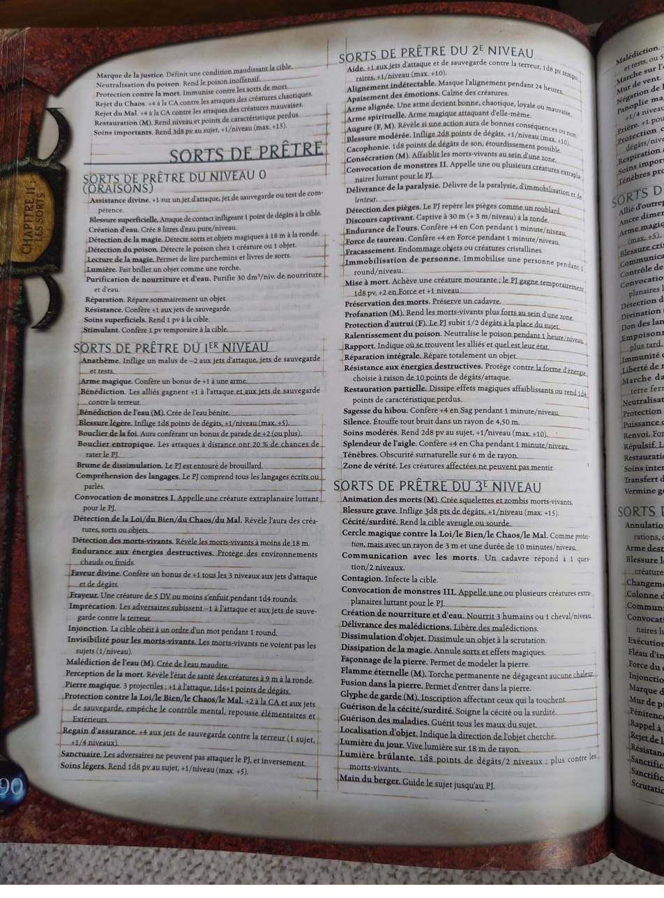
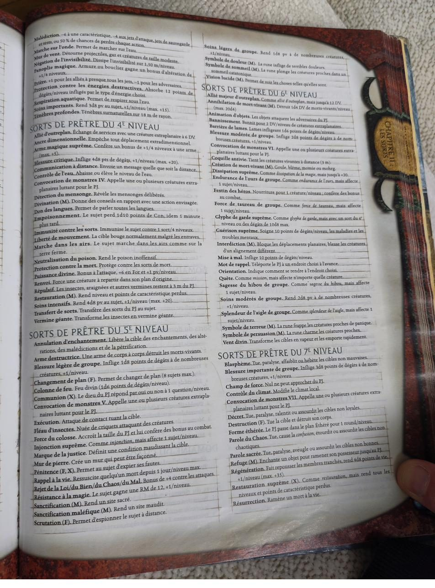
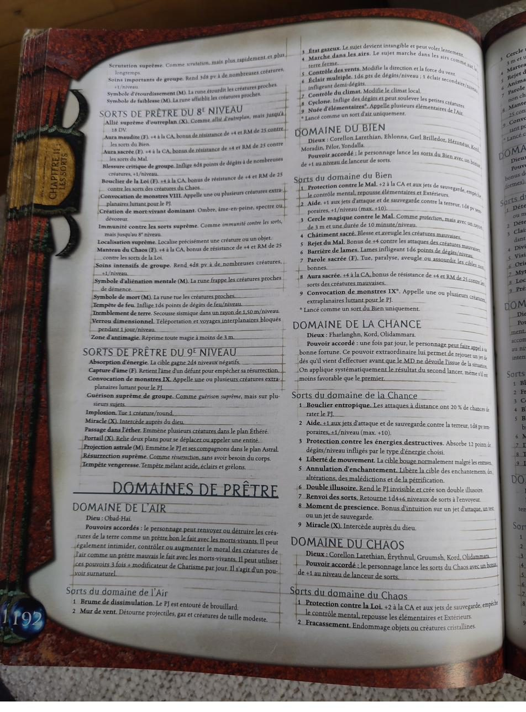
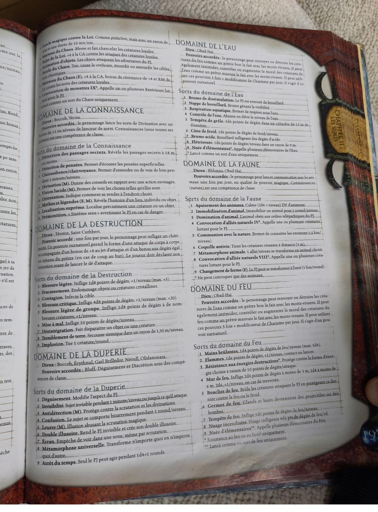
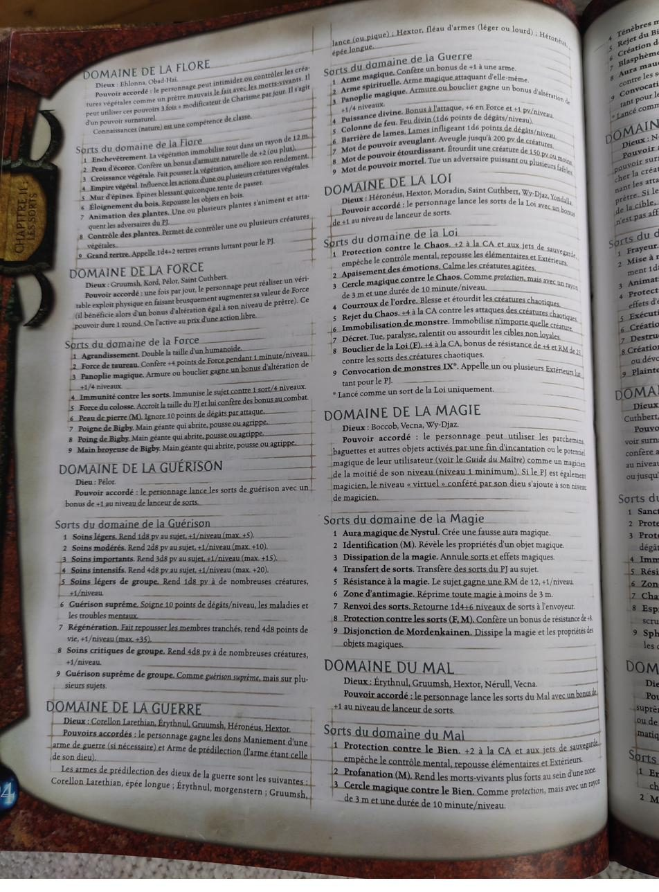
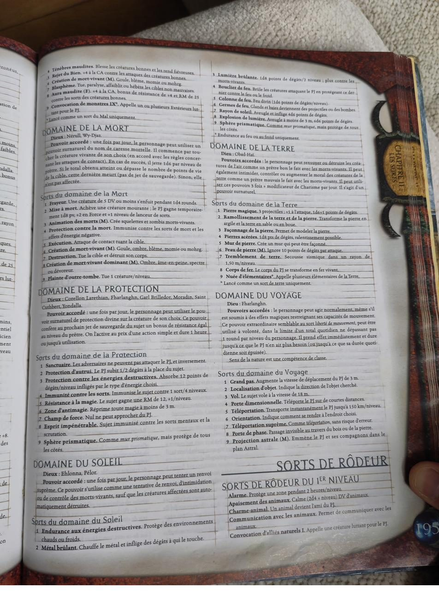

Règles
Ce qui a été vérifié dans les livres, ce qui reste à trancher, et la bibliothèque d’Antoine.
Méthode de travail : chaque règle porte un statut. vérifié lu sur une photo du livre ; à vérifier page non vue ou ambiguë ; règle maison décision du MJ ou contenu de campagne, jamais une base de recommandation. La terminologie est celle de la VF officielle.
Le moteur du build
- Sort persistant (Codex Profane p. 83) : +6 niveaux, portée personnelle ou fixe.
- Métamagie divine (Codex Divin p. 82) : applique Sort persistant en dépensant 7 tentatives de renvoi par sort. L’économie des tentatives est le paramètre central de la montée en niveaux.
- Puissance divine (Prê 4, Guerre 4) : portée personnelle confirmée ; bonus de base à l’attaque égal au niveau de personnage, +6 en Force, +1 pv temporaire par niveau. Persistable.
- Force du colosse (Prê 5, Force 5) : portée personnelle confirmée ; taille G, +8 For, +4 Con, +4 armure naturelle, RD 5/Mal puis 10 et 15/Mal. Persistable.
- Prêtre cloîtré : trois domaines au total ; celui de la Connaissance est accordé d’office (+1 niveau de lanceur aux divinations, toutes les Connaissances en compétences de classe).
- Domaines retenus : Soleil (renvoi suprême, obligatoire pour le Serviteur radieux), Force (Force du colosse en sort de domaine 5), Connaissance (Localisation suprême en sort de domaine 8).
Le Serviteur radieux
Codex Divin p. 70-72 vérifié. Le texte dit qu’il « fonctionne avec n’importe quel dieu du soleil » : Lathandre est valable.
- Conditions VF : neutre bon, Volonté +5, Connaissances (religion) 9 degrés, Premiers secours 5 degrés, Emprise sur les morts-vivants, sorts divins de niveau 1, domaine du Soleil. Entrée réaliste au niveau 7.
- Incantation 10/10, et accès à toutes les armures, ce qui lève la limite du prêtre cloîtré.
- Aptitudes clés : renvois suprêmes supplémentaires (3 + Charisme par jour) ; aura de protection (+2 de moral en Volonté pour lui et ses alliés à 3 m) ; domaine supplémentaire au niveau 5 de la classe, Gloire ou Purification au choix ; explosion d’énergie positive au niveau 8 (1d6 par niveau de classe à tous les morts-vivants dans 30 m).
Règles vérifiées et leçons
| Règle | Ce qu’il faut retenir |
|---|---|
| Arme alignée | Prê 2, 1 min par niveau, contact. Bien supérieure à Armes glorieuses (Codex Divin p. 79), qui ne dure que jusqu’à la fin du prochain tour. À poser une fois par allié pour passer la RD. |
| Arme destructrice | Prê 5. Les morts-vivants qui ont moins de DV que le niveau de lanceur sont détruits sur un jet de Volonté raté ; la résistance à la magie ne s’applique pas. À poser sur l’arme du guerrier ou du barbare. |
| Vitalité sacrée | Don divin (Libris Mortis) : immunité à l’absorption d’énergie, l’arme principale d’Alcatar. Remplace l’idée impossible de persister Protection contre la mort. Coût et durée à vérifier p. 25 et suivantes. |
| Extension d’effet | En VF, c’est l’équivalent d’Empower (+2 niveaux), pas d’Extend. Erreur fréquente. |
| Spontanéité de domaine | Codex Divin p. 86 : un seul domaine par prise du don. |
| Maître contemplatif | Entrée au niveau 11 au plus tôt (Connaissances religion 13 degrés), pas au niveau 7. |
| Localisation suprême | Sort de domaine de la Connaissance, niveau 8 : le sort clé pour trouver les phylactères. |
| Disciple du Soleil | Codex Divin p. 80 : en dépensant deux tentatives de renvoi au lieu d’une, les morts-vivants affectés sont détruits, autant de fois que les tentatives le permettent. |
| Sceptre de défi | Libris Mortis p. 77, 13 000 po : −4 en résistance au renvoi à tous les morts-vivants dans 9 m. Annule exactement le +4 d’une liche. |
| Taille G et allonge | En taille G, la zone morte de 3 m d’une arme à allonge devient un vrai désavantage après le niveau 9. |
| Sagesse impaire | Un +1 qui laisse la Sagesse impaire ne sert à rien face aux objets à paliers pairs : toujours poser le point là où il franchit un palier. |
| Prodige magique | règle maison Le MJ applique la version 3.0 : +1 au DD de tous les sorts, en plus des emplacements bonus. |
Points de règles notés à la table
Relevés pendant l’aventure 2 ; certains restent à trancher avec le MJ.
| Point | Ce qui a été dit, ce que dit le texte |
|---|---|
| Renvoi suprême | Selon le texte, une fois par jour, à la place d’un renvoi normal. Le MJ l’a présenté comme le mode par défaut d’Isidoro à clarifier. Isidoro a 9 tentatives par jour : 3 + 2 (Charisme) + 4 (Emprise sur les morts-vivants). |
| Savoir du prêtre cloîtré | Arcanes Exhumés : fonctionne comme le savoir bardique. La seule synergie officielle demande 5 degrés en Connaissances (histoire) ; étendre le bonus à toutes les Connaissances est une décision du MJ. |
| Pouvoir du domaine de la Force | +niveau de prêtre en Force pendant 1 round seulement, une fois par jour. |
| Agrandissement | +2 For, −2 Dex, −1 en attaque et en CA ; la masse d’armes lourde passe à 2d6. |
| Fronde et Pierre magique | Pierre magique inflige 1d6+1 (2d6+2 contre les morts-vivants). Le texte ne dit pas si la Force du lanceur s’ajoute à trancher. |
| Fièvre des réfugiés | Jet de Vigueur raté : perte de Dextérité et de Constitution, guérie aussitôt par un prêtre. |
| Poison des potions de Lucas | 1d4 de Constitution par minute, avec un jet de Vigueur à chaque minute. |
| Sacoche à potions | 40 po, dix potions ; en sortir une est une action de mouvement. |
| L’Encensoir | contenu MJ Morgenstern à une main dont la tête creuse reçoit une fiole d’eau bénite, qui éclabousse la cible à chaque coup ; à recharger après chaque frappe. 10 po. |
La bibliothèque d’Antoine
Livres VF confirmés sur photos (24 août 2026).
- Règles de base et suppléments : Manuel du Joueur, Guide du Maître, Les Arcanes Exhumés (Unearthed Arcana), Codex Profane (Complete Arcane), Codex Divin (Complete Divine), Compendium Arcanique (Spell Compendium), Libris Mortis, Les Chapitres Sacrés (Book of Exalted Deeds), Les Chapitres Interdits (Book of Vile Darkness), Dieux et Demi-Dieux (3.0, sans les dieux de Faerûn), Manuel des Monstres II et III, Manuel des Plans, Manuel et Grand Manuel des Psioniques, Draconomicon, Fiend Folio, Campagnes Légendaires, Guide des personnages monstrueux.
- En VO seulement : Monster Manual IV et V.
- Royaumes Oubliés : Les Royaumes Oubliés (Campaign Setting), Magie de Faerûn, Manuel des Joueurs de Faerûn, Races de Faerûn, Monstres de Faerûn, L’Outreterre, Les Marches d’argent, Le Sud Étincelant, Dogmes et Panthéon (Lathandre p. 37, Tymora p. 77, Velsharoon p. 110), Seigneurs des ténèbres, L’Inaccessible Orient, La Cité de la Reine Araignée.
- À identifier : « D’ombre et de lumière » et « Par l’Encre et le Sang », deux titres 3.0.
Photos du Manuel












Le bestiaire des tyrannœils (impression de gemmaline.com) décrit le tyrannœil, le gauth et le tyramort rencontrés à Mintar. Gemmaline n’est pas une source de règles officielle : à recouper avec le Manuel des Monstres.